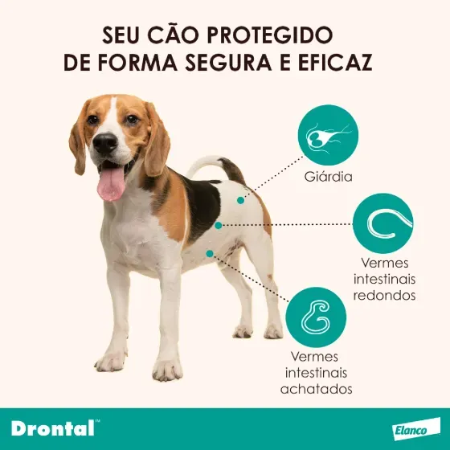

Brinquedo Pelúcia Reforçada Pato Para Cães Tam. G

Brinquedo de pelúcia reforçada em formato de pato, tamanho G (44 x 37cm), ideal para divertir cães de grande porte.
Ver detalhes
Produto destinado aos cuidados com a saúde dos cães, auxiliando na prevenção e no controle de parasitas intestinais e giardíase.
O vermífugo é um produto utilizado na rotina de cuidados com cães.
Seu uso adequado faz parte das medidas de prevenção e manutenção
da saúde dos animais, sendo altamente palatável (sabor carne).
| Informação | Detalhes |
|---|---|
| Nome | Vermífugo Drontal Plus + Sabor para Cães 10kg |
| Categoria | Medicamentos veterinários |
| Indicação | Cães (a partir de 3 semanas de idade) |
| Apresentação | 4 comprimidos (10kg cada) |
| Uso | Veterinário (Oral) |
| Preço | R$ 100,90 |
Brinquedo de pelúcia reforçada em formato de pato, tamanho G (44 x 37cm), ideal para divertir cães de grande porte.
Ver detalhes
Mais vendido! Peitoral ajustável com guia e detalhes refletivos para maior segurança nos passeios noturnos.
Ver detalhes